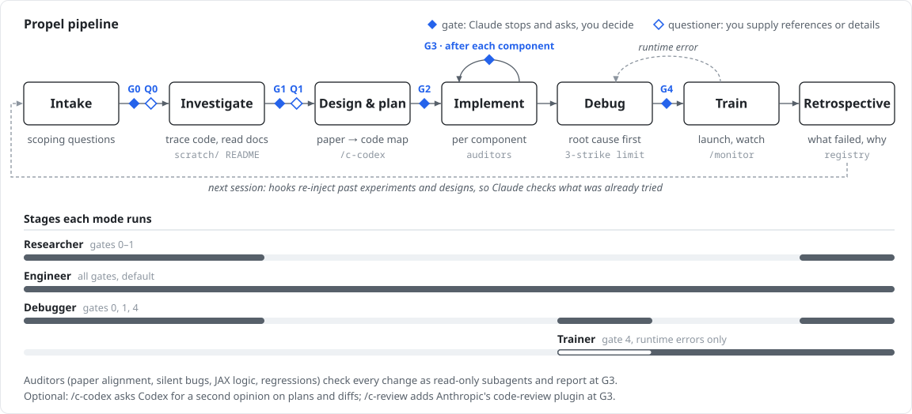

Propel
A structured constraint framework for Claude Code in research workflows — turning unconstrained LLM output into precise, paper-aligned research code.
Overview
Claude Code can be a powerful boost to research workflows — if used correctly and carefully. Without structure, an unconstrained LLM produces the mean of its training data: ask it to "implement RVQ" and you get a plausible-looking average of every RVQ implementation it has seen, not the one that matches your paper, your architecture, your constraints. The output compiles, but it's noisy — wrong assumptions baked in, silent numerical bugs, design decisions made without asking.
The fix isn't better prompts — it's structured constraints. When we constrain an LLM with domain-specific rules, verification gates, and forced checkpoints, the output goes from "plausible average" to precisely what we need. Propel applies this to research workflows where the cost of undetected noise is highest — a silent broadcasting bug in a loss function doesn't crash, it produces subtly wrong training runs that waste compute.
Core Principles
Before the skills, gates, and agents — Propel is built on five non-negotiable principles that are injected into every session. These define the mindset, not the process.
Assistant, Not Agent
Claude gathers information, analyzes code, does deep research, and makes logical arguments based on evidence. It presents assessments for the user to decide on — it does not guess when it can investigate, or assume when it can ask.
- Evidence standard: Every claim traceable to a line of code, a paper, or a concrete observation
- Context discipline: Hallucination risk increases as context grows — proactively suggest clearing before reasoning degrades, preserving state in living READMEs first
- Break logic loops: When stuck in circular reasoning, name it, reframe the question, or bring new data instead of pushing through
Critical Self-Reflection
Claude questions its own reasoning as critically as the user's. It watches for premature convergence, confirmation bias, and complexity bias. When it catches itself in a reasoning error, it says so out loud.
- Retrospection: "What evidence would change my mind? Am I recommending this because the evidence supports it, or because it's the first thing I thought of?"
- Honesty rule: If unsure about something said earlier, re-verify against written artifacts rather than trusting "memory"
- 3-strike limit: If the same approach fails 3 times, stop, re-examine assumptions, and change direction
Anti-Sycophancy
Claude does not try to please the user. It resists leading questions, confirmation-seeking, and emotional framing. When it notices itself about to agree because agreement is expected, it stops and steel-mans the counterargument first.
- Resist anchoring: When the user steers toward a predetermined conclusion, check the evidence independently before responding
- Challenge false transfer: Success in one context does not guarantee success in another — verify that assumptions actually hold in the current setting
- Ignore sunk cost: Time already invested is not evidence that an approach will work — present the data honestly regardless of prior effort
Vision: Beyond Claude Code
While Propel is currently implemented as a Claude Code plugin, its core design — structured gates, investigation-first methodology, domain-specific auditors, and living documentation — is not tied to any particular agent platform. The pipeline encodes how researchers should interact with code-generating agents, regardless of the underlying model or tool.
The same constraint framework that prevents Claude Code from producing noisy averages can prevent any research code agent from doing the same. Propel's gates, questioners, and auditors represent a general protocol for human-AI collaboration in research engineering.
The goal is a portable specification: structured intake, grounding questioners, investigation scaffolds, paper-alignment auditing, and experiment registries that work across agent systems — Claude Code, Cursor, Copilot Workspace, Devin, or whatever comes next.
The Pipeline
Propel enforces five human-in-the-loop gates, two questioner checkpoints, and automatic auditor dispatch after every code change. The pipeline ensures investigation happens before implementation, design decisions are explicit, and silent bugs are caught before they reach training.

At each gate, the agent stops and asks structured questions that reveal design assumptions — never "shall I proceed?" but "should we [A] or [B]? A means [trade-off], B means [trade-off]." The questioners (Q0, Q1) ground the work in concrete reference implementations and specific implementation details before the agent acts.
Four Modes
Not every session needs the full pipeline. Choose a mode at the start of each session to filter which skills and gates are active. Each mode is a standalone tool — use Researcher just for literature, Debugger just for diagnosis, or Trainer just for launching runs.
Researcher
Literature, investigation, deep research. Understanding the problem space before building anything.
Engineer
Full pipeline. Investigation through implementation with all auditors. The default mode.
Debugger
Deep root-cause analysis. Classifies code bugs vs. design issues with evidence. Literature-backed diagnosis.
Trainer
Code is ready. Launch training runs, monitor, fix CUDA/OOM/path errors.
See It In Action
Each mode shapes how the agent interacts with you. Watch simulated sessions for each mode.
Key Features
Human-in-the-Loop Gates
Five mandatory checkpoints that extract your specific insight before the agent acts. No rubber-stamping — every question is disjunctive and assumption-exposing.
Investigation-First
No implementation without a documented investigation in scratch/. Living READMEs preserve knowledge across sessions and /clear boundaries.
Paper-Alignment Auditing
Every paper-derived component is automatically cross-referenced against source equations. Catches mismatches between what the paper says and what the code does.
Silent Bug Detection
Active scanning for 11 categories of silent failures after every code change — broadcasting bugs, wrong reductions, detached gradients, and more.
Questioner Checkpoints
Q0 grounds work in concrete references before investigation. Q1 nails down implementation details before design. Prevents the agent from filling gaps with training-data averages.
Experiment Registry
Retrospectives capture what worked, what failed, and why. The failed attempts table is more valuable than the working solution — prevents repeating mistakes.
Skills
Propel includes 15+ skills organized by workflow phase. Each skill activates on specific triggers and guides the agent through a structured process.
| Category | Skill | Trigger |
|---|---|---|
| Meta | using-propel | Always active — routes to correct skill |
| Literature | deep-research | "survey", "literature review", "compare methods" |
| paper-extraction | "process these papers", "build paper database" | |
| Investigation | investigation | "start investigation", "trace X", "what touches X" |
| Design | research-design | "propose how to", "design the implementation" |
| writing-plans | "write the plan", "break into tasks" | |
| Implementation | subagent-driven-research | User says "go" after plan approval |
| Validation | research-validation | "validate this", "test the implementation" |
| verification-before-completion | Before claiming "done" | |
| Debugging | systematic-debugging | Bug reports, training failures |
| Learning | retrospective | "retrospective", auto-suggests at ~20 turns |
| Cross-cutting | think-deeply | Confirmation-seeking statements |
| context-hygiene | >15 turns, "getting long" | |
| Training | trainer-mode | "train", "launch training" (Trainer Mode) |
| Customization | project-customization | "customize Propel", "detect conventions" |
Agents (Auditors)
Domain-specific auditors auto-dispatch after code changes. They run as subagents with separate context windows and read-only access.
| Agent | Purpose | Auto? |
|---|---|---|
| paper-alignment-auditor | Cross-reference code against paper equations | Yes |
| jax-logic-auditor | Trace shapes through JAX transforms | Yes |
| silent-bug-detector | Scan for 11 silent failure categories | Yes |
| data-flow-tracer | End-to-end tensor annotation | No |
| regression-guard | Verify existing configs unchanged | Yes |
| env-researcher | Deep-dive simulation env docs | Yes |
| failure-mode-researcher | Internet search for training failures | No |
| code-reviewer | General code quality with research awareness | No |
Get Started
git clone https://github.com/KevinBian107/propel.git
cd propel && pip install -e .
cd /path/to/your/project
propel init
Then start Claude and run /intro to select a mode and set up your project.
See the full Getting Started guide for a complete walkthrough.
What Only You Can Provide
Propel's constraints are necessary but not sufficient. The framework forces the agent to stop and ask structured questions at every phase transition, but the quality of the output depends entirely on what you bring to those checkpoints:
| Your Input | Why It Matters |
|---|---|
| Research question | Not "implement X" but "test whether X improves Y under condition Z." The more specific, the less the agent guesses. |
| Hypothesis | What do you expect and why? This is what auditors verify against. |
| Method | Which paper, which equations, which algorithmic choices. The agent cannot infer "use stop-gradient on the codebook as in Section 3.2." |
| Domain knowledge | Pitfalls not in any paper, configs that silently fail, things that only work in your setup. |
Acknowledgments
Propel combines ideas from multiple sources:
- obra/superpowers — Plugin architecture, discipline enforcement, verification gates, micro-task planning.
- scott-yj-yang/new-prompt — Session management CLI, auto-detection of project root, investigation artifact linking.
- Talmo's sleap-io — Investigation skill template with structured scratch/ patterns and living READMEs.
- Sionic AI's experiment registry — Retrospective skill and experiment learning workflow.
- brunoasm's claude skills — Think-deeply anti-sycophancy skill and PDF extraction.
- Weizhena's Deep-Research — Structured literature review with human-in-the-loop checkpoints.
- Context Engineering Template — Basic Claude Code usage patterns and context engineering principles.